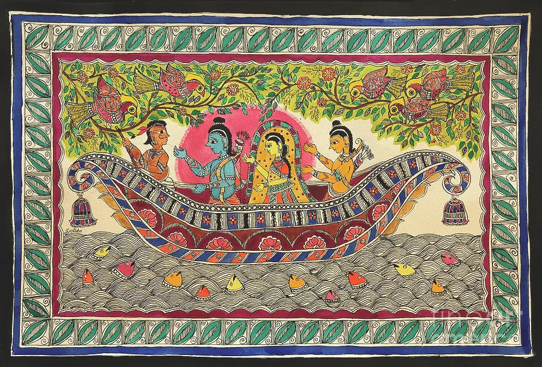

A Tapestry of Indian Art: Exploring the Diverse Forms
India, a land steeped in history and culture, is a treasure trove of artistic expressions. From the intricate patterns of Madhubani paintings to the graceful movements of Bharatanatyam,
Indian art forms offer a glimpse into the country's rich heritage.
Indian art forms, a reflection of the country's diverse cultural landscape, have captivated audiences for centuries. These artistic expressions, ranging from visual arts like painting
and sculpture to performing arts like dance and music, showcase the creativity and ingenuity of Indian artisans. By exploring these forms, we can gain a deeper understanding of India's
rich history, traditions, and spiritual beliefs.
Let's now dive into some popular art forms:
-
Paintings:
-
Madhubani Painting

- Origin: Bihar, India
- Significance: Madhubani art, traditionally practiced by women, depicts mythological scenes, nature, and everyday life. Its vibrant colors and intricate geometric patterns reflect the cultural richness and spiritual beliefs of the region.
- Details: The use of natural pigments and the incorporation of traditional motifs like flowers, animals, and deities make Madhubani art a unique representation of Indian folk art.
-
Warli Painting
- Origin: Maharashtra, India
- Significance: Warli painting is a tribal art form characterized by simple, geometric shapes and figures, predominantly in white on red or brown backgrounds. It represents the harmony of humans with nature and their connection to the earth.
- Details: Warli artists use white paint made from a mixture of rice paste, water, and gum.
-
Kalamkari Painting
- Origin: Andhra Pradesh, India
- Significance: Kalamkari painting is known for its intricate floral and mythological designs. It is primarily done on fabrics.
- Details: Kalamkari painting uses natural pigments and a specific type of block printing.
-
Gond Painting

- Origin: Madhya Pradesh, India
- Significance: Gond painting is a tribal art form characterized by bold, geometric patterns and vibrant colors.
- Details: Gond artists use natural pigments and tools like wood, stones, and bones.
-
Pattachitra
- Origin: Odisha, India
- Significance: Pattachitra is a traditional art form known for its bright colors and intricate details. It primarily depicts Vaishnava deities.
- Details: Pattachitra uses traditional colors and natural pigments.
-
Sculptures
-
Bronze Sculpture
- Origin: Indus Valley Civilization
- Significance: India has a long tradition of bronze sculpture. Their smooth finish and intricate details showcase the technical prowess and artistic skill of ancient Indian artisans.
-
Stone Sculpture
- Origin: Ajanta and Ellora Caves
- Significance: Ajanta and Ellora caves are adorned with intricate stone sculptures. These sculptures depict mythological scenes, Buddhist and Hindu deities, and everyday life.
-
Textiles
-
Kantha Embroidery
- Origin: Bengal, India
- Significance: Kantha embroidery is known for its intricate patterns and bold colors. Kantha quilts are often made from recycled fabric and are used as bed covers or ceremonial cloths.
- Details: Kantha embroidery is often done by women, who often create these quilts for their families.
-
Pashmina Shawls

- Origin: Kashmir, India
- Significance: Pashmina shawls are made from the fine wool of the Himalayan pashmina goat. They are highly prized for their warmth and softness.
-
Bandhani
- Origin: Rajasthan, India
- Significance: Bandhani is a tie-dye technique used to create intricate patterns on fabrics.
-
Dance
-
Bharatanatyam
- Origin: Tamil Nadu, India
- Significance: Bharatanatyam is a classical dance form known for its graceful movements, intricate footwork, and expressive mudras (hand gestures).
- Details: The dance is often accompanied by Carnatic music and involves the use of costumes adorned with jewelry and flowers.
-
Kathakali
- Origin: Kerela, India
- Significance: Kathakali is a classical dance form known for its elaborate makeup and costumes, as well as its dramatic storytelling.
- Details: Kathakali performances are often based on mythological or religious themes.
-
Music
-
Hindustani Classical Music
- Origin: North India
- Significance: Hindustani classical music is a complex art form characterized by intricate ragas (melodic scales) and rhythmic patterns.
-
Carnatic Classical Music:
- Origin: South India
- Significance: Carnatic classical music is a complex art form characterized by intricate melodic patterns and rhythmic cycles.
-
Folk Music:
- Origin: Various regions of India
- Significance: India has a rich tradition of folk music, with many different styles and genres.